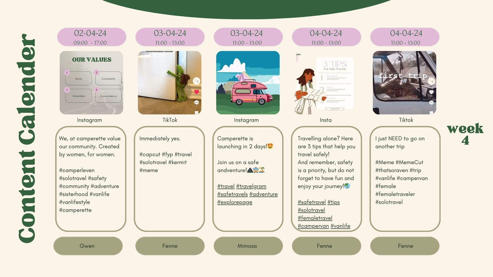

General Information
This branded website is publicly available at buas-media-interactive.github.io/my-website (please change text and hyperlink destination)
This website was created by:
- Fenne Sproet (ID 221385 )
- Mimosa Melis (ID: 224049)
- Maud Ronner (ID: 222881)
- Gwendolina Roberto Rocha (ID: 222207)
Content
Please clarify here the match between students and pieces of content. Make sure that you provide a link to the correct page within the website
| # | Student ID | Value | Name and link of content |
|---|---|---|---|
| 1. | 222207 | Value | Content title |
| 2. | 222881 | ||
| 3. | 221385 | Marketing | Marketing |
| 4. | 224049 |
Production
Design Elements
Please provide a list of design elements alongside their justifications:
-
A colour scheme (with HTML colour codes, which must be consistent with your final website)
—
- #A3A380 The soft green shade works well with the pink and represent nature and calmness
- #E0BAD7 The pink shows the female aspect of our brand.
- #EFEBCE The beige color is for the calm background
- #34623F We added more shades of green to add the adventure and nature aspect
- #1E2F23 The dark color green will be the text shade and it also represent the nature aspect
- Font choices
- User interface patterns (e.g. grids, carousels, menu organizations etc.)
- The structure of the navigation and content (e.g. how content units are distributed across pages)
- All these elements must be justified by referring to the theory and/or vocabulary of design
- Please relate these elements to other units, for example:
- How does website design fit the values and personality of the brand?
- How does website design fit the marketing and communication strategy?
- How does website design help showcase the unique value proposal of the product?
Credits
Please provide links and/or credits for third-party elements including:
- HTML templates if these are different from this one (buas-media-interactive/prj4-group-template)
- The source code for UX patterns other than the ones provided by the “Bootstrap” library (see getbootstrap.com/docs for a list of such patterns)
- Images that were not produced by students themselves, including when crediting is not mandatory (in other words, we ask you to credit Unsplash images)
Testing Report
Please write about…
- Your testing goals – in other words, what you are trying to learn about your website?
- Your testing methods, which includes information about:
- The test’s participants (number, match with target audience, etc.)
- The test’s setting (which material is used, is it done remotely, on campus, at home, etc.)
- The test’s protocol (what instructions are given, how it is recorded, etc.)
- Your testing results, which includes information about:
- Positive and negative aspects of the UI/UX that have been identified, ranked by importance.
- Improvements that have been implemented on the final website (or that would be implemented if doing so would be too complex)
Marketing
Context
Presenting a communication plan carefully curated for Camperette. Describing the plans and actions meant to boost the brand’s growth, customer engagement, and establish a well-oiled community.
This communication plan provides a strategy for Camperette to achieve its objectives and strengthen its position in the market. By supporting its product strengths, targeting specific market segments, and embracing a cohesive marketing campaign, Camperette is in a good position to build brand loyalty, and improve customer happiness.
The platforms chosen are TikTok and Instagram. TikTok, justification: TikTok an online social media platform in which Gen Z is wildly active on (Statista, 2023a) has become the roots of a platform in which a generation unites and connects with one another. They share everything what they are dealing with, to try and find that connection or resemblance. Users can feel safer sharing personal feelings and experiences on TikTok, because of the anonymity that TikTok offers. It makes them feel “like you’re not so lonely, and there’s so many people out there who relate to you as well.” when others with similar experiences connect through sincere and supportive comments (Barta & Andalibi, 2021).
The van life movement is enormously popular on social media platforms like Instagram and TikTok, with the #VanLife hashtag having over 11 million posts on Insta alone, followed in rank by #VanLifeDiaries, #Vanlifers, #VanLifestyle and #VanLifeMovement (Wander Magazine, 2024). #vanlife has almost 18 billion views on TikTok. Instagram: Every day new individuals are searching the hashtag and joining in to share their experiences. #vanlife on Instagram has over 10.6 million posts to date (Jennings, 2021).
Objectives
Campaign objective: launch our brand and engage our preferred target audience effectively.
Reach objective: TikTok: achieve an average of 600 views per video with a total amount of 400 likes. Instagram: reach an average of 100 people per post, aiming for a 20% engagement rate based on reached accounts.
Affect objective: Foster a sense of community and comfort among our target audience.
Response objective: Encourage the target audience to actively participate in our Camperette community, ultimately ensuring female travellers feel safer. Promote a connection with nature, establish the brand as a platform for the solo female travel community, and advocate for an adventurous lifestyle.
Planning
Reflection
Throughout the duration of this project the essence of our communication strategy, summarized in the phrase ‘Empowering Journeys, Uniting Strength. For Women, By Women’ became our strategy on our media platforms. It was not just a tagline, but a guiding principle that shaped our approach. Reflecting on our journey our strategy resonated strongly with our target audience, in particular women in Gen Z. the emphasis on community, adventure, safety and comfort was a driving force behind our content creation, which resulted in positive outcomes.
Our campaign objectives were set ambitiously. Aiming to launch our brand effectively and engage our preferred audience. Based upon the objectives we have set on the beginning of this project; our marketing communication plan was a success. As we are currently still in the process of generating content on our media platforms our insights are based on the insights from 02/04/24. The overall campaign objective to launch our brand and engage our preferred target audience effectively has been reached. As we have reached both on TikTok and Instagram over 80% of our followers identify as females, 78% of our followers are part of Gen Z.
Achieving our reach objectives was vital, with the targets being set at 600 views per video and 400 likes on TikTok, and an average of 100 people reached per post with a 20% engagement rate on Instagram. We can successfully say that we surpassed these targets on both platforms, with TikTok videos averaging 776 views and 383 likes, and Instagram reaching over 195 accounts with an impression rate of 525 and a profile activity of 205, demonstrates the success of our reach objective.
While the affect and response objectives are challenging to measure, we acknowledged the importance of fostering a sense of community and comfort amongst our target audience. Through our media content, we focused on community-related themes, resonating well with our target audience and outperforming viral trends.
Flexibility is a must within marketing, especially when crafting out a campaign. Throughout the process of the marketing campaign, it becomes quickly clear that adjustments are often necessary, driven by varying levels of engagement. During the course of this process, we have come to appreciate the nuanced dynamics between different platforms.
TikTok showed to be a quick tool for garnering swift engagement. It's fast paced nature and immersive content makes it very attractive to capture attention quickly. However, I have realised that maintaining this engagement can be challenging. TikTok users most of the time swiftly scroll through content, making it more difficult for us to maintain a lasting presence in their minds.
On the contrary, Instagram presents a way different landscape. While it is more difficult to initially capture the attention of new audiences, once they are established, maintaining engagement and fostering connections is a lot more manageable. The platform’s layout encourages users to linger on content, which creates more engagement with the brand. Unlike TikTok where, users easily move on, Instagram offers a space where audiences are more inclined to stay engaged and connected over time.
In essence, TikTok grabs attention quickly, but you have to work hard to keep people interested. On the other side, Instagram requires a careful strategy to get followers, but once you do, it's easier to keep them engaged. Understanding these differences will help us in our future plans to make the most of each platform's strengths and reach our goals.
Looking back on the marketing part of the project, it was hard to find the target group on Instagram. Posting on a time where our target group was online was hard to find out because of the fact that our target group travels. On TikTok we did manage to reach more people from our target group. Sometimes working was quite chaotic. When dividing the content that we wanted to post, we came to a great content calendar that would gain us a lot of engagement on 2 different media platforms. Dividing the work was quite easy but sticking to the exact times and days was sometimes difficult. Gaining followers on TikTok was also hard even are TikTok's did quite good so that was a bit frustrating. Overall, even though it was all quite chaotic, because we were flexible, we managed to adjust our plan based upon the insights we got and therefore managed to achieve our marketing objectives.
Now we kicked off the brand, by a marketing campaign that would show our values and vision to people. It gave us the beginnings of the brand. Gathering the preferred target audience, showing our vision and mission. In the next phases of the brand development, we would suggest starting a follow up campaign to spread the message of the brand ‘empowering journeys, uniting strength’ even more, and create a well-built community. As we have learned that building up that community strength can be quite hard. We would suggest introducing: ‘Empowerment Spotlights’, a campaign designed to showcase and celebrate the diverse stories and experiences of women in the van life community. Through user generated content, collaborative partnerships and community gatherings (can help to facilitate more awareness, act are a vehicle or starting point for involvement or change and build community spirit (Boss, 2020)), the campaign aims to amplify voices, foster even more connections and emphasize on creating that safe space for women to unite and support each other. We have found out that our target audience engages more with our content when they can relate to it. Moursi (2023) studies that Gen Z responds better if the content shown is relatable to them. Therefore, it is important for us to connect with our target audience and involve them in our brand.
In conclusion, our marketing campaign has successfully achieved its objectives of launching our brand effectively and engaging our preferred target audience. Looking ahead, let’s continue to empower journeys and unite strength together.
Management
Lean Canvas
Problem
- Safety
- Loneliness
- Describe briefly how the problems are solved now (existing alternatives).
Solutions
- Outline the brand solution(s) you have for the above problem(s).
Customer segments
- List your target customers and/or users.
- Describe briefly the characteristics of your ideal customer (early adopter, brand persona).
Unique value proposition
- With a single, clear compelling message, state why your brand idea is different and worth paying attention to.
Unfair advantage
- List the aspect(s) of your brand that cannot easily be copied, also called your sustainable competitive advantage(s).
Channels
- List your main path to customers.
- How do you reach them? What channel(s) do you use.
Key metrics
- List the key numbers that tell you how your brand experience is doing.
- For example amount of users, downloads, visitors, subscriptions, sales etc. Numbers you are able to measure.
Revenue streams
- List your sources of revenue: describe the revenue model and the (different) revenue stream(s).
Cost structure
- List your main costs: define the fixed and variable costs.
- Calculate the cost per unit.
Services/products
- State what your product and/or service is and how this contributes to your unique value proposition.
- Clarify the fit between the product/service developed and the brand identity/brand image.
Validation of Assumptions
Write a reflection on the choices made in creating choosing the trademark, including an analysis of the existing alternatives.
Appendix
Please use the list below to provide links to evidence for all parts of your justication. Please double-check all links before delivering the website. Do not hesitate to refer to these numbers above.